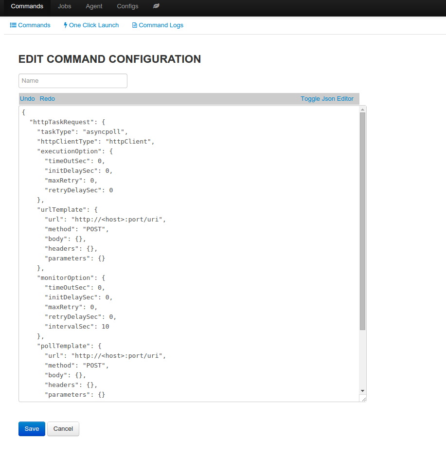
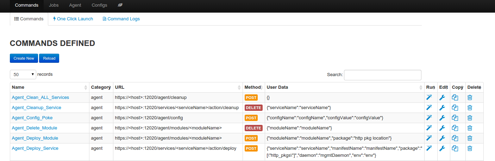
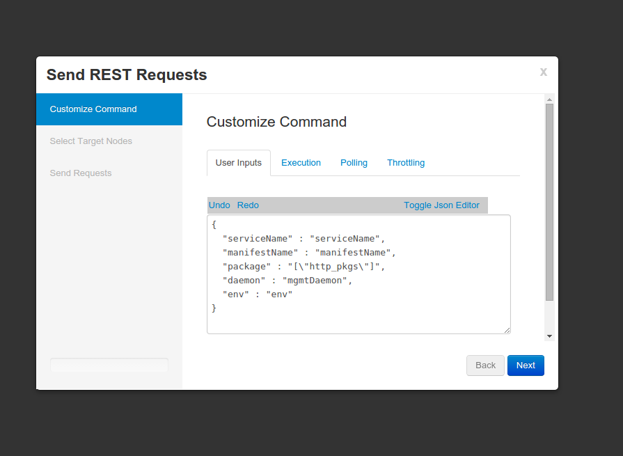
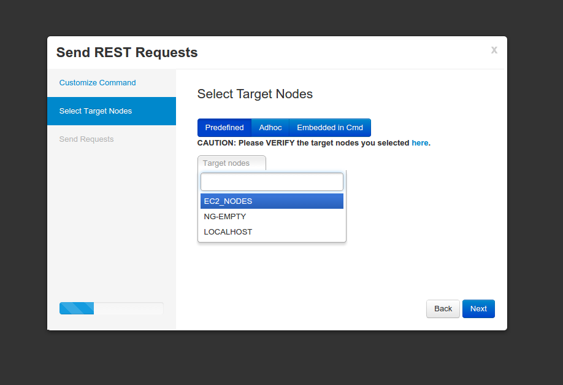
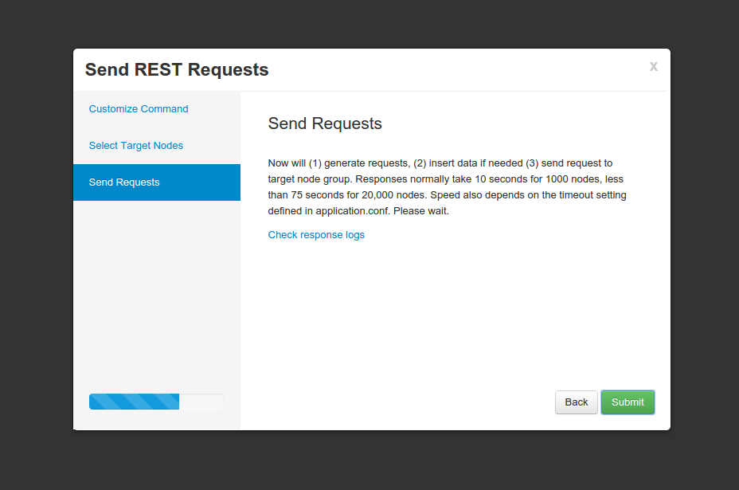

Command¶
Create command
- Command can be created in two ways
- Create from scratch
- Clone from an existing command
- Define command type
- async: request with reponse as the result
- asyncpoll: request followed by polling to get result
- Fill in the command template with http request values, similar to defining http request in RESTful client like POSTMAN
- Define template parameter; template parameter can be used in all http reuqest values, template parameter is identified by “<>”, minimally if the command can be executed against different hosts, “<host>” needs to be part of the url value. Template parameters will be replace with real values at execution time, or if values are not provided, the parameters will be skipped.
- Define user data, it will be used to drive command launch wizard
edit command
Modify command
Except the name, which is immutable, data of the command can be modified
Delete command
Delete command from persistent store
command summary page
Run command
Run command will launch command wizard
- wizard screen 1: customize command with execution options, user data
- wizard screen 2: select nodegroup against which command will be run
- wizard screen 3: confirm and launch command job, job progress and result can be found in command job log.
wizard screen 1
wizard screen 2
wizard screen 3
